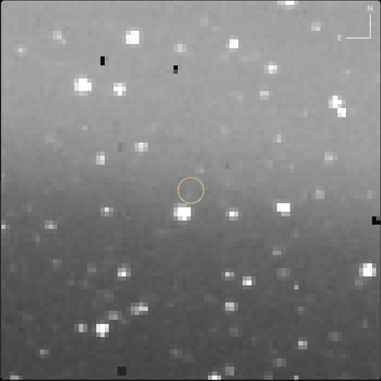
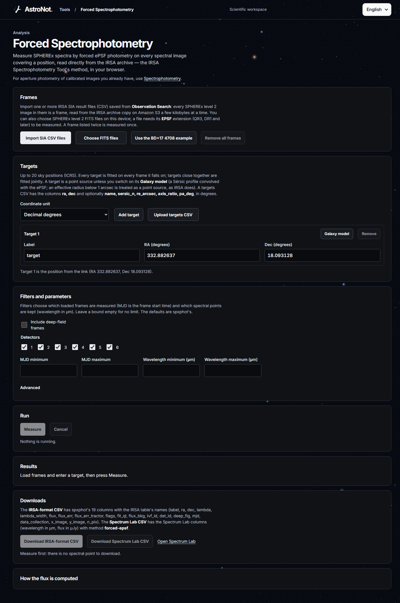
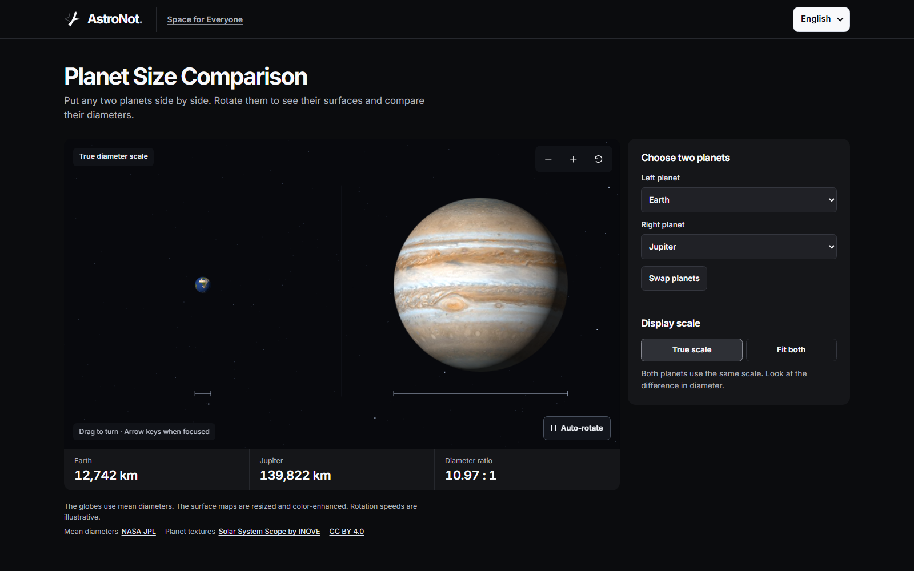
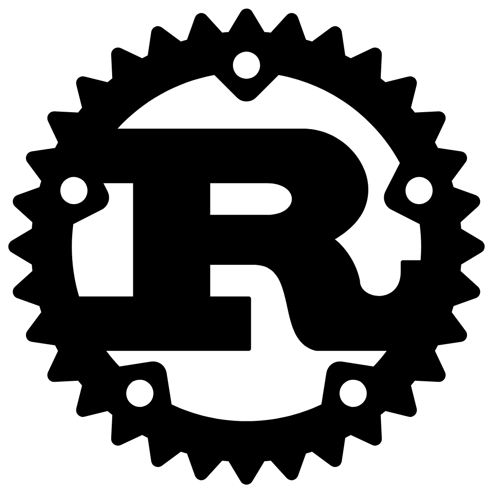
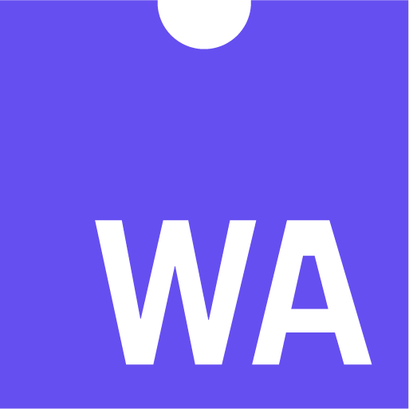
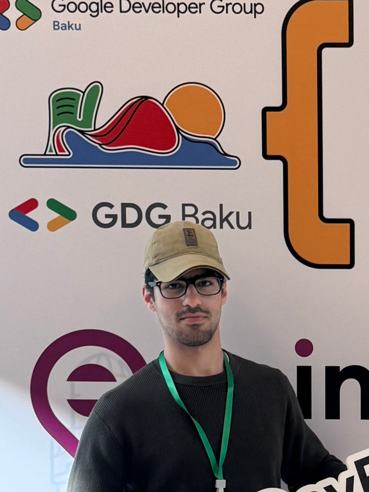
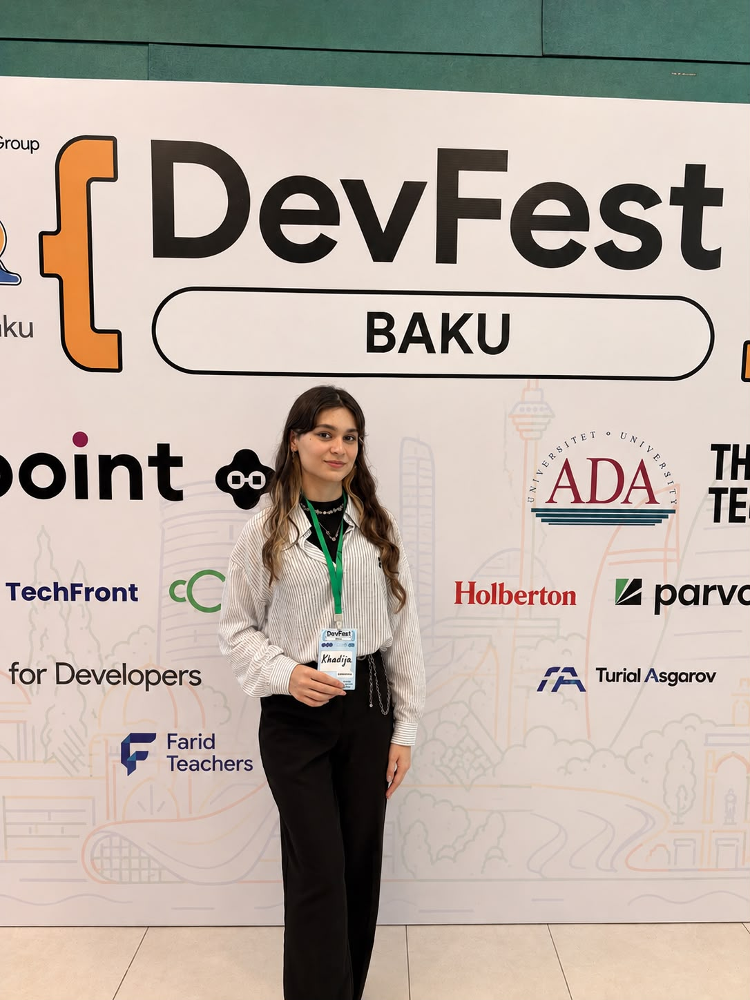
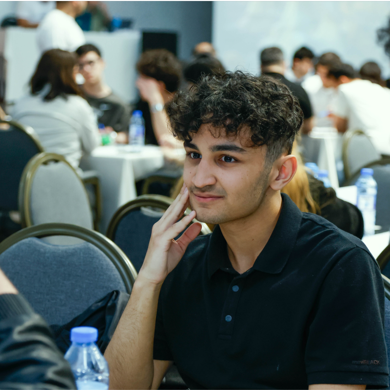

AstroNot.
Space tools for researchers and curious minds
One platform to analyze astronomy data and explore space.
Team AstroNot · NASA Space Apps Challenge · [CHALLENGE NAME]
Spiral galaxy: illustrative artwork, not a telescope image.
Challenge
The barriers to exploring space
Finding and using astronomy tools can take too much effort.
- 1Useful tools are scattered across different websites.
- 2Complex interfaces take time to learn.
- 3Older workflows add setup and navigation friction.
- 4Large data files can slow processing and interrupt work.
These barriers consume researchers’ time and discourage beginners.

Solution
Astronomy tools in one place
AstroNot connects scientific analysis with visual exploration.

For researchers
13 scientific tools for working with observations, FITS images, and spectra.

For everyone
6 interactive experiences covering constellations, planets, Moon phases, nebulae, meteors, and galaxies.
- 1Choose a tool.
- 2Open an example or your data.
- 3Explore the results.
Space data and technology
Rust + WebAssembly
Efficient scientific processing inside the browser.
We compile Rust into WebAssembly to run selected demanding calculations directly in the browser.
- Rust handles core data-processing operations.
- WebAssembly brings compiled Rust code to the web.
- Applications include FITS decoding, image alignment, source detection, and catalog matching.
Data: NASA/IPAC IRSA · SPHEREx observations · NASA and ESA/Hubble imagery

Rust code
WebAssembly Your browser · AstroNot
Your browser · AstroNotReal SPHEREx cutout decoded by the WebAssembly kernel · NASA/IPAC IRSA
Impact
Making astronomy easier to access
AstroNot aims to reduce the effort between curiosity and discovery.
For researchers
A shared workspace reduces tool switching and makes analysis workflows easier to navigate.
For space enthusiasts
Interactive 3D models and visual explanations provide an approachable starting point.
For students and educators
Real observations connect astronomy concepts with hands-on exploration.
Team
The team behind AstroNot

Uzeyir BayramliML/Data Analyst
Khadija AhmadovaBackend Developer
Jahid MahmudzadaFrontend DeveloperNext steps
What comes next
- 1Test core workflows with researchers and first-time users.
- 2Benchmark larger datasets and improve processing and memory usage.
- 3Expand guided learning and support for more astronomy datasets.
Our goal is to make astronomy tools easier to find, use, and understand.
Explore AstroNot [PUBLIC WEBSITE URL]